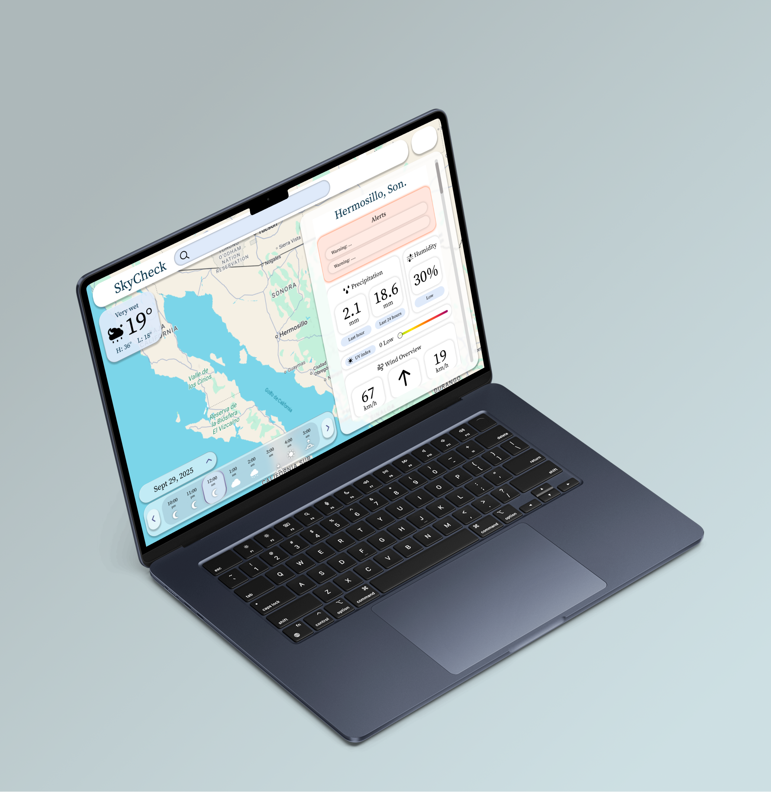
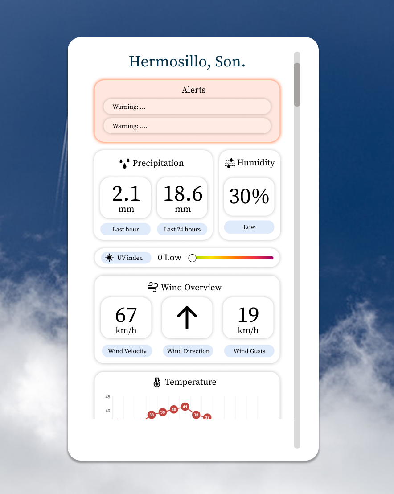
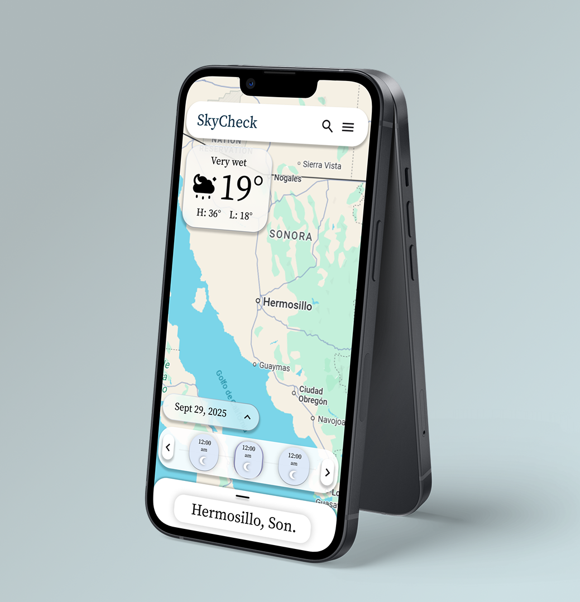

SkyCheck
Aplicación web de monitoreo climático
SkyCheck es una plataforma climática basada en la web desarrollada para el NASA Space Apps Challenge 2025. Utiliza la API de Meteomatics y conjuntos de datos de la NASA para mostrar temperatura, humedad, viento y condiciones del cielo mediante una interfaz responsiva.
Con visualizaciones intuitivas, SkyCheck ayuda a los usuarios a comprender los patrones climáticos locales y a prepararse para condiciones extremas.


Planteamiento del Problema
El clima inesperado puede interrumpir actividades al aire libre, pero los datos históricos del clima suelen ser difíciles de acceder e interpretar. SkyCheck fue creado para el NASA Space Apps Challenge 2025 para proporcionar información climática clara y útil para agricultores, empresas y viajeros, ayudándolos a planificar y prepararse ante condiciones cambiantes.
Proceso de Diseño
Diseñamos tanto interfaces de escritorio como móviles en Figma utilizando componentes reutilizables. La versión de escritorio se implementó con React, HTML y CSS, enfocándose en la visualización clara de temperatura, humedad, viento y condiciones del cielo. La versión móvil permitió adaptar la interfaz a pantallas más pequeñas.
El proyecto presentó una interfaz limpia e interactiva con componentes para temperatura, humedad, velocidad del viento y condiciones del cielo. Incluía un selector de ubicación y un panel para ver datos en tiempo real e históricos.
SkyCheck hace que la información climática compleja sea accesible, ayudando a los usuarios a comprender los patrones meteorológicos locales y prepararse ante condiciones extremas. Apoya la planificación agrícola, logística y decisiones de viaje, ofreciendo información práctica y útil para escenarios reales.

